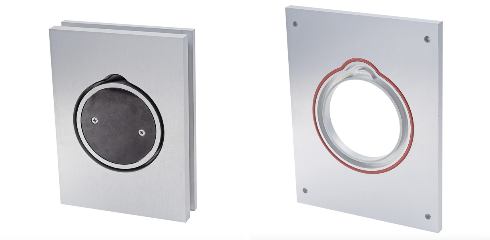

Особливості ручного запаювача лотків

Ручний зварювач використовується для герметичного запаювання та надійного пакування різних продуктів
харчування. Його головна особливість полягає в тому, що він не передбачає попередньої обробки інертними газами.
Адже такий пристрій вважається конструктивно простим та має у своєму наборі мінімальну кількість необхідних
функцій.
Принцип експлуатації ручного зварювача полягає в тому, щоб нагрівальний елемент чинив прямий вплив на харчову
плівку. Така плівка, у свою чергу, зазнає активного процесу нагрівання і під впливом підвищеної температури
починає поступово плавитися. В результаті плівка надійно припаюється по всьому контуру лотка, запобігаючи
можливому попаданню повітря всередину контейнера з продукцією.
Сучасний зварювач лотків ручний може бути доповнений регулятором температур, розташованим на панелі управління.
Використовуючи такий регулятор у ручному режимі, вдається встановити необхідну величину нагріву, що фіксується з
урахуванням конкретної товщини харчової плівки та матеріалу, з якого було виконано лоток.
Тому перед початком роботи з новим зварювачем рекомендується виконати кілька тестових запусків:
використовується зварювання з різними температурними режимами, після якого важливо перевірити якість кожного
нового шва. В результаті можна розібратися і зрозуміти, як саме працює ручний запайщик лотків.
Деякі сучасні моделі виробник додатково укомплектовує гострими ножами для оперативного обрізання плівки в
автоматичному режимі. У разі наявності матриці зйомного типу, а також її подальшої заміни можна скористатися
лотками різних форм та габаритів. В результаті ручний зварювач лотків вважається справді універсальним
помічником.
Головна відмінність таких моделей від інших пристроїв полягає у невеликих розмірах і, як наслідок, у
мінімальному споживанні електроенергії. Середні показники продуктивності від 4 до 6 циклів за 1 хвилину
експлуатації.
Трейсилер ручний потребує періодичного догляду: нагрівальний елемент важливо час від часу очищати, адже на його
поверхні часто накопичуються залишки харчової плівки, що пригоріла. При цьому важливо бути дуже акуратними, щоб
не пошкодити поверхню нагрівальної деталі.